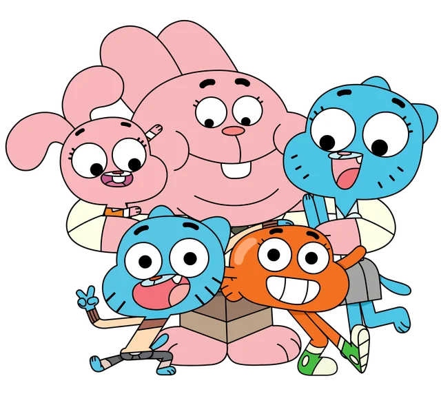
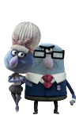
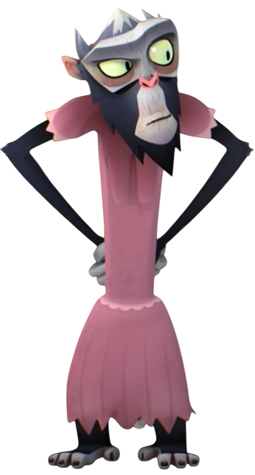
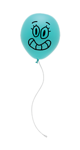
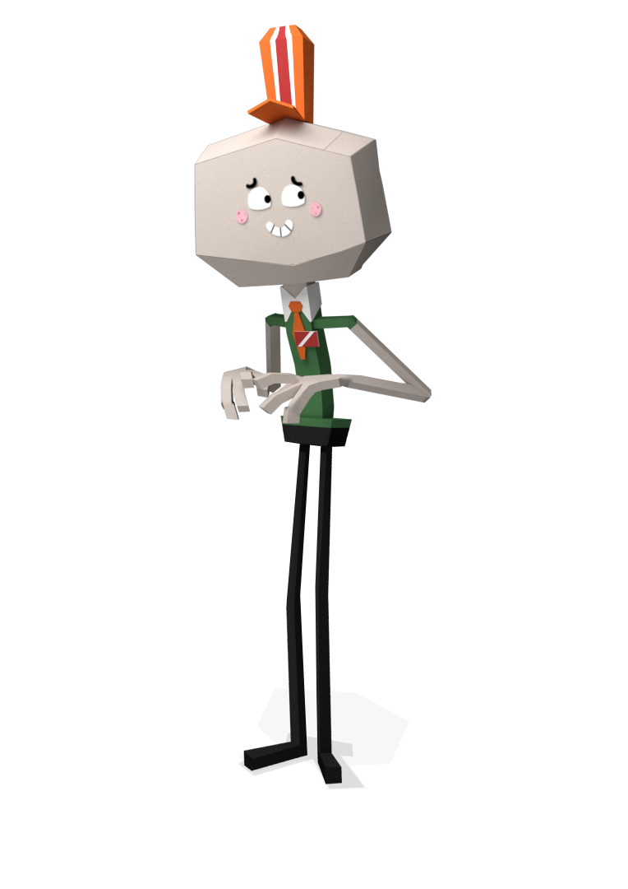
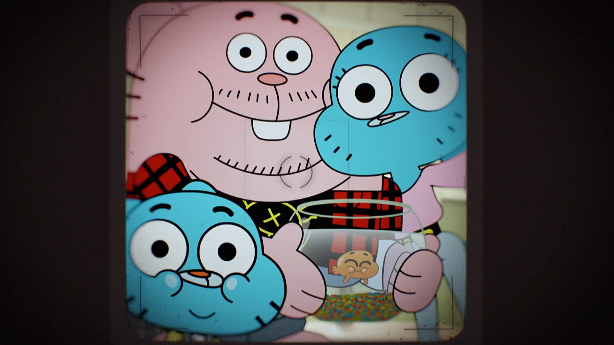
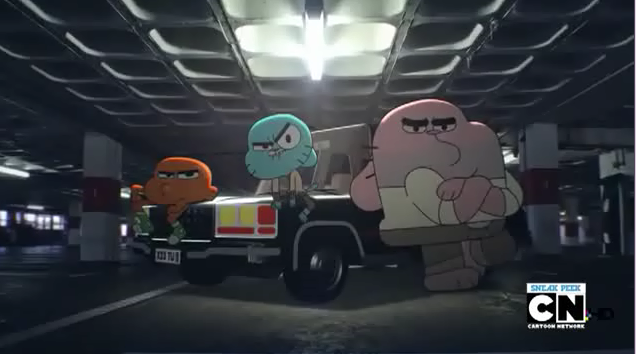
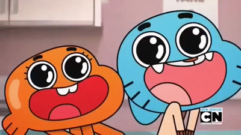

My Favorite charaters from The Amazing World of Gumball.

The Wattersons
The Watterson family are anthropomorphic animals, and are quite unusual; they consist of two rabbits, two cats, and a goldfish. Gumball and Nicole are both blue cats, while Anais and Richard are both pink rabbits. Darwin is a goldfish.
"The Amazing World of Gumball Wiki"

The Robinsons
The Robinson family are the Wattersons' next-door neighbors. They are both blue-gray (excluding Rocky), with large Muppet style pink-purple noses,

Miss Simian
Miss Lucy Simian is a supporting character, as well as a supporting antagonist, of The Amazing World of Gumball. She teaches at Elmore Junior High and has been doing so since the Stone Age. Miss Simian despises Gumball and will do anything she can to ruin his mischievous plans. Principal Brown has a maddening crush on her, and she gladly returns the feeling.

Alan
Alan Keane is a supporting character in The Amazing World of Gumball. He is a friendly teal balloon who attends Elmore Junior High. He is also Carmen's boyfriend.

Larry
Laurence "Larry" Needlemeyer is a supporting character in The Amazing World of Gumball. He works at almost every store in the town of Elmore, usually as a cashier. Larry manages to keep up with all of his jobs by "working very hard," though he has been fired on at least one occasion.
My Favorite Songs

Life Can Make You Smile

On My Way

Without You

Make The Most Of It
My Favorite Episodes

The Origins Parts 1 & 2

The Remote
